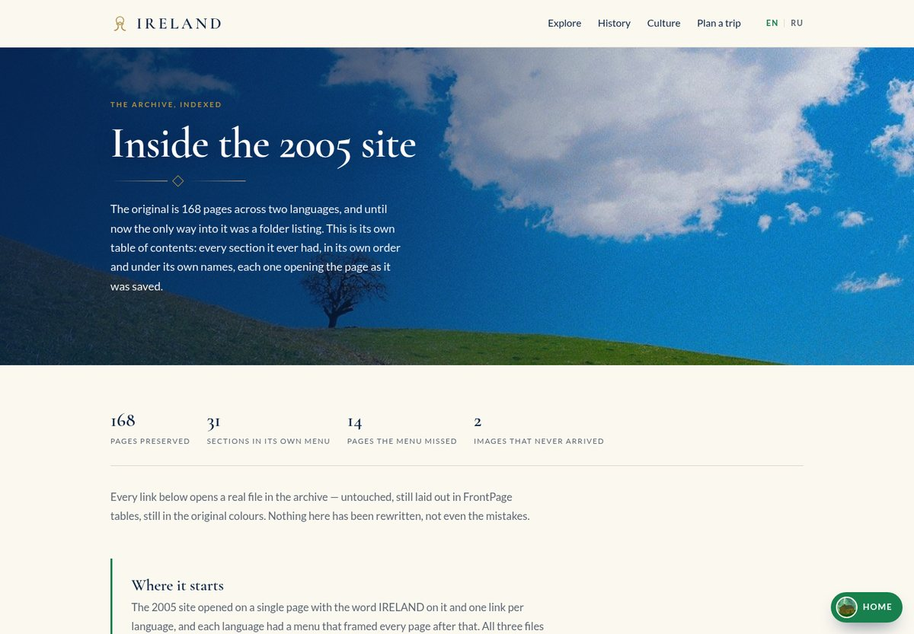
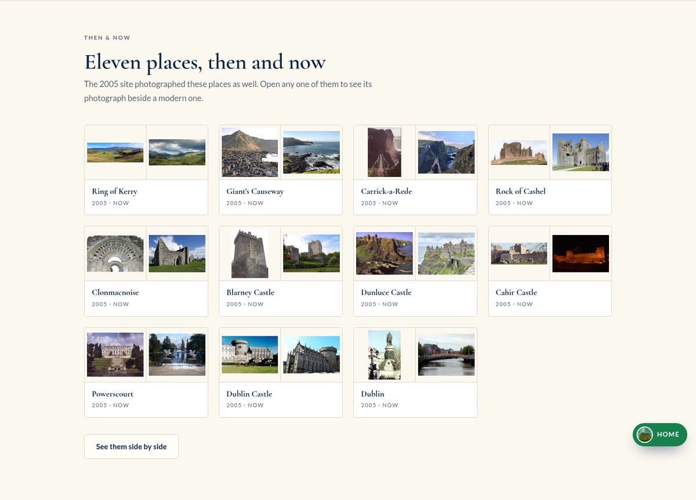

The short version
The 2005 site still exists, unchanged, inside this one. All 168 pages are served from the archive, frames and all, and they still work. You can open any of them from the contents page — a page the old site never had.
The rebuilt guide is the other half: thirty places, five long-form sections on history, culture, geography, the country today and planning a trip, every page in English and Russian, and eleven places where the 2005 site also took a photograph, shown side by side with a modern one.
It is a static site. No database, no API, no login. The content is typed data in the repository, and the same components render both the live site and a 90-page plain-HTML export.
The archive had no index
Keeping the original was the easy half. The 168 files sat in a folder with no index beyond the splash page the site opened with, so preserved and usable were not the same thing.
So I generated one: every section under the name its own menu gave it, in its own order, each row opening the file as it was saved. Pages the menu never linked to, pages that never had a title, and the two images the site asked for and never got are all marked rather than tidied away.

Read the longer versionTwo links that claimed an index existed
The original page pointed at two folders as if each were a section of the old site. Neither folder has an index file, and GitHub Pages does not generate directory listings, so both were 404s on the live site.
They passed locally for two reasons: the local preview server does generate listings, and the export test only checked that a path existed on disk. The links are gone, and an end-to-end test now asks the server for all 168 archive links and reads the status code.
Eleven places, then and now
The 2005 site photographed some of these places. Eleven of them, as it turned out. On those pages the 2005 photograph sits next to a modern one.
The old scans run from 200 pixels wide to 1024, and from landscape to portrait. Rather than stretch them to a common shape, each sits inside a fixed frame on paper — you see the whole original photograph, letterboxed, never cropped.

Read the longer versionOptional by design
Nineteen of the thirty places were never on the 2005 site, so no comparison renders for them. The 2005 photograph is an optional field on a place, and the page simply skips the block when it is absent — so one page component serves both cases without a branch anywhere else.
115 pages of mojibake
The original was Windows-1251. 115 of the 168 pages were encoded that way, and a modern browser rendered them as garbage. They were re-encoded to UTF-8, so the archive reads correctly now — though it is no longer byte-identical to what was saved in 2005.
That trade is written on the archive's own page rather than hidden, because it is the one place where keeping the original meant changing it.
Read the longer versionTwo pages that were nearly lost
Two pages in the working copy had their Cyrillic destroyed outright. A conversion somewhere in the site's history had read cp1251 as Latin-1 and written the result back as UTF-8, leaving 6,151 replacement characters where the text should have been.
The original repository holds the site twice: the working copy, and an unreferenced folder marked as version two. Comparing them file by file, fourteen of the 168 pages differ and two supporting files exist in only one copy. I had assumed that folder was a byte-for-byte duplicate and said so in an earlier version of the README; it is not. It turned out to hold both damaged pages intact, and they were repaired from it.
Why the labels were invisible
Every eyebrow label on the site — the small gold capitals above a heading — rendered almost invisible against the cream background. The colour was set correctly. The colour was being overridden.
Tailwind re-declares bare custom properties inside its own theme block. The site had defined a muted colour; Tailwind defined one too, in near-white, and won. Prefixing every token put them out of its reach and the labels came back.
Read the longer versionA bug that looks like a design choice
Nothing about it reads as broken in the code. The rule sets the colour, the colour is correct, and the page renders in a different one — because a value nobody on this project wrote is winning further down the cascade. That is worth remembering: when a style is ignored, the first question is not whether it is wrong but what else is setting the same property.
It is also why the stylesheet is hand-written CSS with Tailwind imported only because the toolchain expects it. The design is not expressed in utility classes, so the framework is a dependency the design does not use — and the tokens are documented in the repository precisely so this cannot come back quietly.
Adding a section touches one file
The five long-form sections used to be wired in by hand in five places: a route, a case in the page component, an entry in the static export, a line in the header menu, and a line in the export's link rewriter. Adding two more sections meant editing all five, and forgetting one produced a page that rendered but could not be reached.
Sections are now a registry. One entry each, holding its intro, its sub-sections and a flag for whether it belongs in the menu, and the routes, the menu, the pager and the export all read from it.
Read the longer versionA URL is a public commitment
The URLs are still listed explicitly rather than derived from the registry, because a URL should not move just because a section was reordered. A small type-level guard indexes the URL table with a section id, so a section added without a URL fails the compiler instead of shipping a dead link on a public page.
A dot that knows where you are
On a long page, the menu down the side lists that page's sections and marks the one you are reading in green. It used to mark the wrong one: the first entry was marked once and stayed marked, so half-way down Culture it still said you were reading about the Irish language.
A small script now watches which heading has crossed a line down the page and moves the mark — and the dot itself — onto that entry, following you back up when you scroll up. Clicking an entry glides to it.
Read the longer versionWhy that is a plain script and not part of the app
The downloadable version of this site is plain HTML with no framework in it. Had the dot been a React component, that version would have had no dot at all — the bug would have been fixed on the site I develop and left standing on the site I publish, which is the only one a visitor ever sees.
So the tracking lives in one small JavaScript file that both versions load, copied into the export exactly as the stylesheet is. Ten pages have that menu and load it; the other eighty-one carry no script at all.
It also has to cope with the page growing underneath a jump. The photographs further down load as they come into view and take up no space until they do, so a click aimed at a heading stopped several hundred pixels short — in the section above. The script now watches where the jump ended and aims again, without ever fighting a scroll you make yourself.
How it's built
Small on purpose. The site is static content by nature, and a backend would have been architecture for its own sake.
- React, and nothing else
- React 19, a small router and hand-written CSS. No component library, no CSS framework, no state manager.
- Content is typed data
- Every place, section and string lives in the repository as a typed object, so the compiler catches a missing Russian translation, a broken image path or a typo in a slug before anything renders.
- Language comes from the path
- The root path is English and the Russian pages sit under a prefix. Every URL is explicit, and the language switch maps one to the other without guessing.
- One stylesheet, two outputs
- The live site and the downloadable static build load the same file, copied rather than reimplemented, so the two cannot drift apart.
- The export is a renderer, not a second site
- The static build renders the real page components to markup. There is no second implementation to keep in step.
- The one script is outside the bundle
- The green dot that follows you down a section page is a plain file the static build loads too, so it works on the published site and not only in development.
What I did, and what I didn't
I designed and directed this rebuild, wrote the content and the Russian translation, and did the 2005 archive conversion. I reviewed, tested and corrected every part of the result.
The part I care about is the decisions — keeping the original instead of deleting it, letterboxing the scans instead of stretching them, generating the static build from the same components instead of maintaining two sites, and tracking down why the colours were being overridden.
Where to look
The guide is the front door. The archive is the reason the project exists.